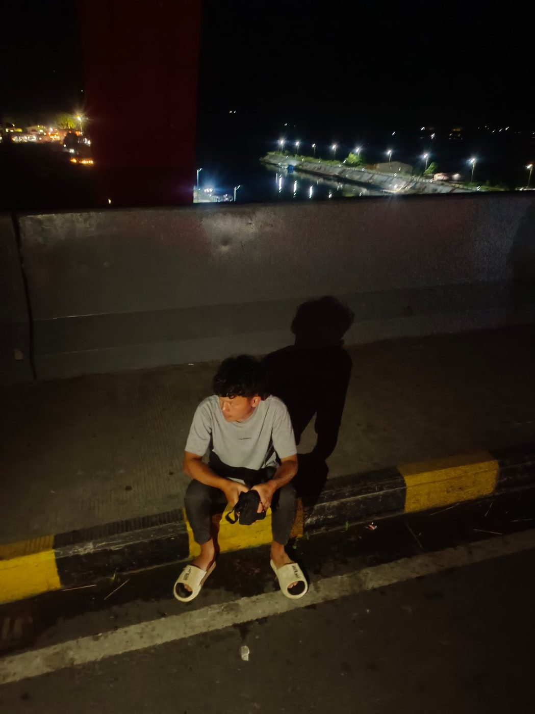
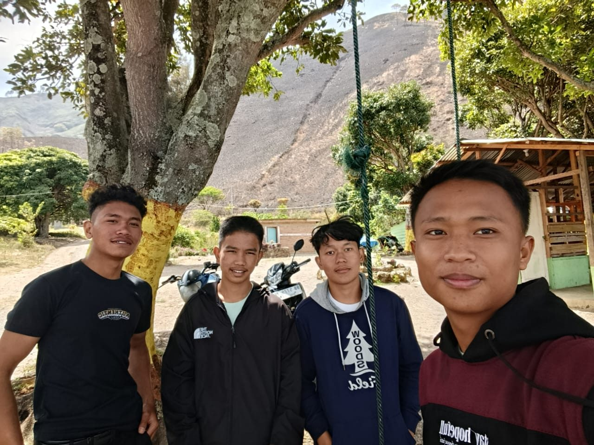
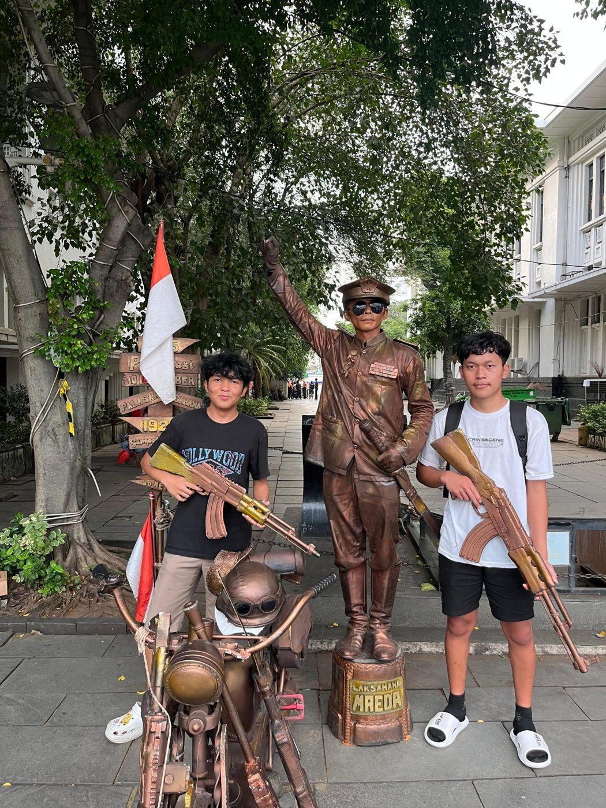

Catatan perjalanan
My Holiday
Tujuh potret dari liburan yang paling saya ingat.
Cerita singkat
Liburan buat saya bukan soal tempat yang jauh, tapi siapa yang berangkat bersama. Ada perjalanan ke daerah pegunungan dan danau dengan udara sejuk dan jalan berkelok, ada juga hari-hari santai di kota: duduk di pinggir laut, mampir ke kawasan kota tua, atau bermain di arcade. Berikut sebagian momen yang sempat saya abadikan.





